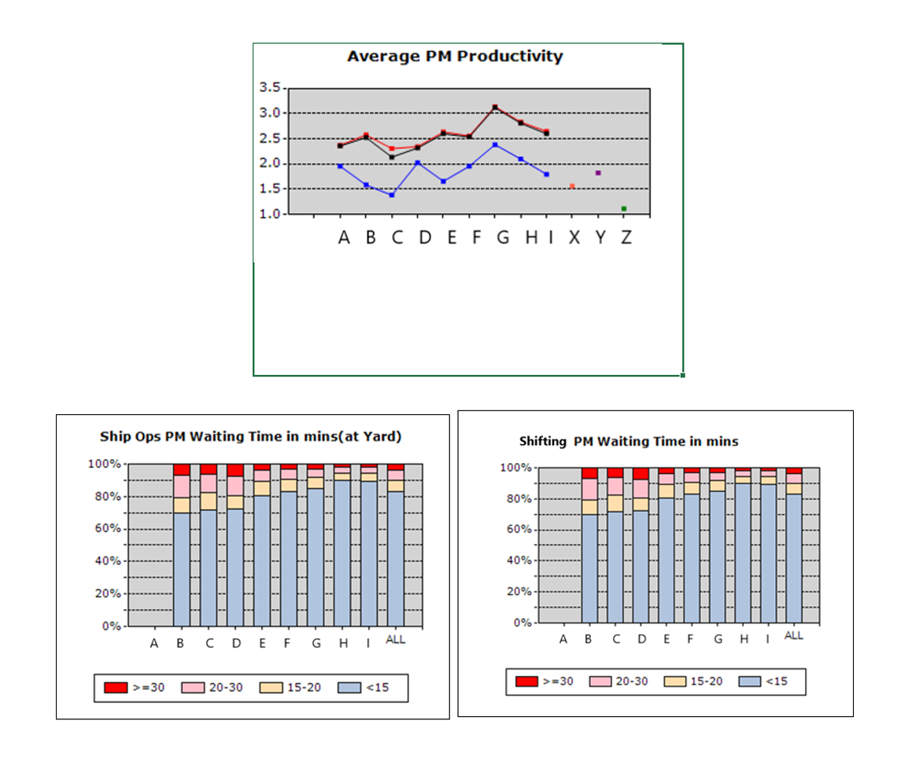
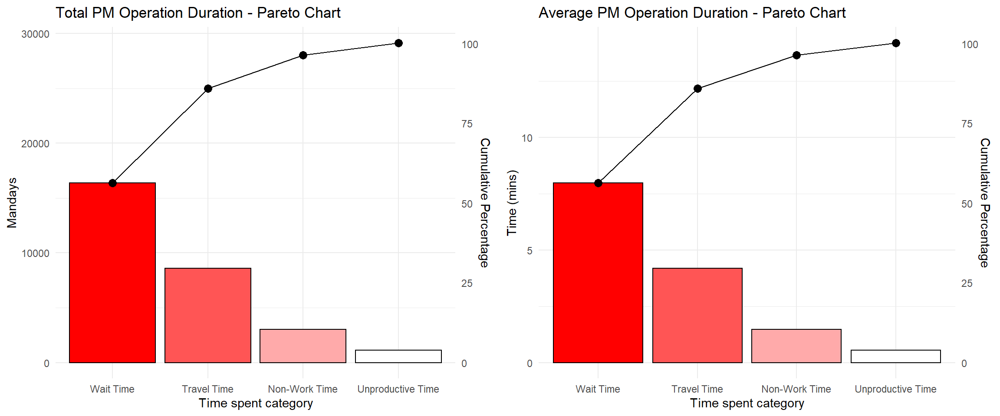
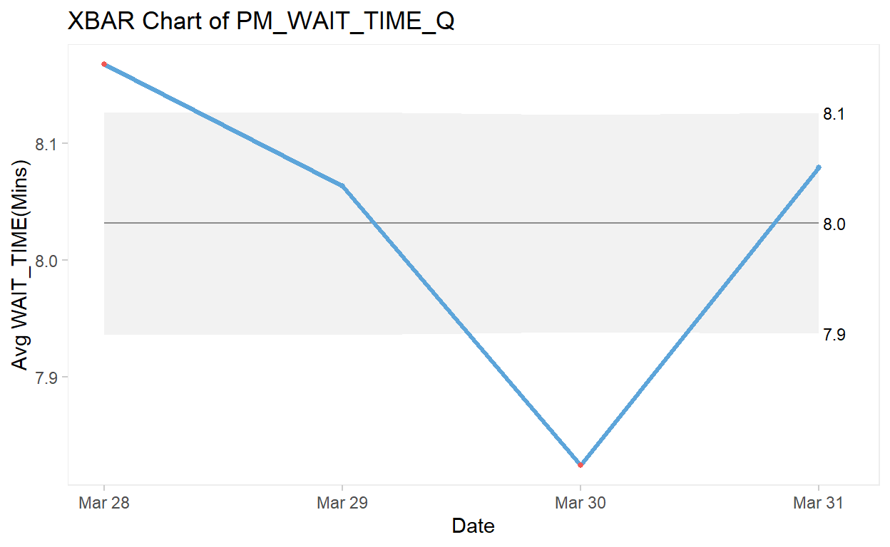
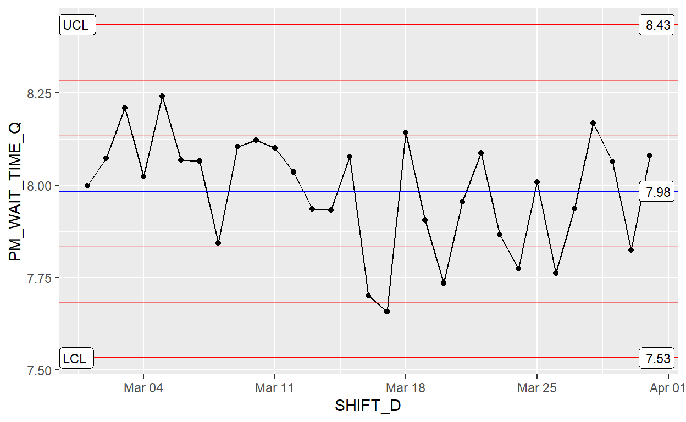
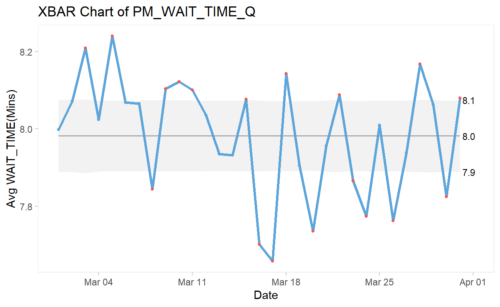
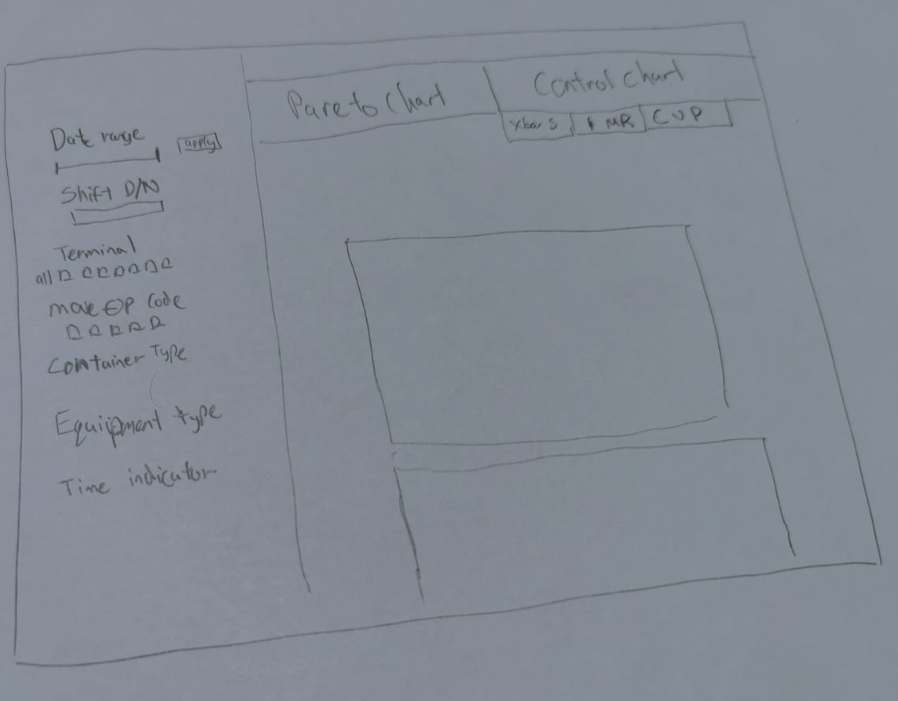

A short description of the post.
knitr::opts_chunk$set(
echo = TRUE,
warning = FALSE,
message = FALSE,
comment = "##",
R.options = list(width = 80)
)
Maritime trade has been the backbone of international trade since the beginning of time. Today, maritime trade accounts for approximately 92% of world trade.(Xu,et al,2020).Singapore’s strategic location and political stability has allowed Singapore to command a strategic position as a maritime hub in the global arena.
PSA Singapore
As the world’s busiest trans-shipment port, PSA Singapore handles about a fifth of the world’s transhipped containers (Saini,2018). As of 2019, the port attracts 130,000 vessel calls on average a year, while the maritime industry accounts for 7% of Singapore’s GDP and 170,000 jobs, and this figure is set to grow.(Turner,2019).
Port Operations
Upon a vessel’s arrival at a berth in the container terminal, containers are discharged from and loaded onto it. A typical discharging operation starts with a quay crane picking up a container from the vessel and placing it onto a prime mover (PM), which then transports the container to a storage yard. At the yard, a yard crane picks up the container from the PM and shifts it to a designated spot. Loading operations involve the transporting of containers in the opposite direction, from the yard to the vessel(Ku, 2018).
PM Productivity is defined as the sum of the total number of containers handled divided by the total hours. The following are the key terms used by PSA to define PM productivity.
\[ Productivity = Total Containers Handled / Total Time \] \[Total Time = Sum (Est.Travel Time + Est.Wait Time + Unproductive Time + Non-Work Time)\]
Total Time is defined as the time difference between the two operation activities.
Estimated Travel Time is the duration between two locations based on distance matrix with fixed speed limit/hr.
Estimated Wait Time = Total Time – Non-Work Time - Unproductive Time – Est. Travel Time
Unproductive Time is the time logoff by the same driver.
Non-Work Time is the time taken for a change of driver, meal break, and PM breakdown (if any).
In 2021, PSA Singapore handled a total 36.9 million twenty-foot equivalent units(Leow, 2021).And on a daily average (with the data sample), There are more than ninety thousand PM yard operations daily. With the amount of transactions and connectivity, even a slight improvement in productivity can bring about large savings to the organisation, and the opportunity to increase output, thus providing growth to the organization.
The objective of this assignment is to explore various R packages and develop Data Viz prototypes to be determined in the final Shiny app.
Currently, PM operation’s performances are tracked using Operation Indicators such as PM productivity (container/total duration) and PM waiting time aggregated by duration, from daily shifts to monthly reports and breakdown by individual terminals and operation type.
Although changes have been made to improve resource/yard/berth planning which impacts the PM productivity, the performance is still largely analyzed through static excel reports and Qlikview Visualizations which improve interactive selection across variables. This makes it difficult for the internal stakeholders to drill down and pinpoint the issues as it is tricky to monitor and compare the measurement statistically.

Other previous studies on PM operation efficiency typically focus on crane productivity by work schedule(Li,Wu,Petering,Goh,Souza, 2006), and resource planning & deployment to find the optimal number of PMs and trucks (haulier) to reduce average PM waiting time.(Eindhoven University of Technology, 2010).
The first study conducted in 2006 only discusses crane productivity and not PM productivity. Additionally, the study is way overdue. The second study by Eindhoven University of Technology in 2010 was conducted in a sandbox environment to find the optimal number of PM per equipment in a single process flow, thus totally ignoring the complexities of live transactions and connectivity of PM operation.
Pareto and control charts are used together to help tunnel down into the operation process and to find the root cause of productivity problems. The Pareto chart helps to identify and focus effort on the top portion of the causes to resolve most of the problems.
By using a variety type of control charts with control limits of 3 standard deviations, we studied the stability of the current process, analyze and made improvements, and monitored the results of the newly implemented process. Furthermore, the data obtained from the process can also be applied to predict future performances of the process.
The data are examined using a control chart to determine if the problem is due to special causes of variation or just common causes of variation. (source).
Common cause variation
is also called natural/random variation or noise,
is present in all processes,
is caused by phenomena that are always present within the system,
makes the process predictable within limits.
Special cause variation
is also called non-random variation or signal,
is present in some processes,
is caused by phenomena that are not normally present in the system,
makes the process unpredictable.
The following interactive features are proposed to be incorporated in the data visualizations to enhance usability and user experience:
Data filter: To allow users to filter and zoom into the data by “Date”, “Terminal”, “Equipment”, and “Container Types” to examine the patterns across time and space. This also allows users to flow from a high-level overview and narrow down to data on a higher granularity.
Use of tooltips: When users hover over the chart objects, the tooltips provide on-demand details without having too much information cluttered on the chart.
When we interpret the data, the Data visualization helps us to follow the flow of “overview first, zoom and filter into details”, bouncing back and forth, here and there, with ease and without interrupting our train of thought.
packages = c('tidyverse','dplyr','ggplot2','plotly','lubridate','qicharts2','ggQC','qcc','rmarkdown','gridExtra' )
for(p in packages){
if(!require(p, character.only = T)){
install.packages(p)
}
library(p, character.only = T)
}
The data source used in this exercise is from PSA Singapore’s PM anonymized dataset that contains PM operation event records. There are approximately 5 million records with 69 variables. The data set is reduced to 37 variables for the preliminary analysis as those information are vessel and previous event information which does not impact PM operations.
The data set is imported using read_csv function which is useful for reading delimited files into data frame.
ZL_Dataset <- read_csv("data/pm 201903.txt")
This study focuses on PM productivity in the yard, we have filtered to take in only yard event_c which are Equipment Mount(EQMT) and Equipment Offload(EQOF) operations. Unused columns are removed using subset() function to further reduce the data set.
Using glimpse() function, we can see the data type and sample records of the data set.
## Rows: 2,955,108
## Columns: 20
## $ SHIFT_D <dbl> 20190330, 20190330, 20190330, 2019...
## $ Terminal_ID <chr> "V2_0", "V2_0", "V2_0", "V2_0", "V...
## $ EVENT_C <chr> "EQOF", "EQOF", "EQOF", "EQMT", "E...
## $ EVENT_DT <chr> "2019/03/30 2:13:26.000 pm", "2019...
## $ EVENT_SHIFT_I <chr> "D", "D", "D", "N", "N", "N", "N",...
## $ MOVE_OP_C <chr> "O", "O", "O", "O", "O", "O", "O",...
## $ LENGTH_Q <chr> "40", "40", "20", "40", "40", "40"...
## $ CNTR_TYPE_C <chr> "GP", "RF", "GP", "GP", "GP", "GP"...
## $ CNTR_ST_C <chr> "F", "F", "F", "F", "F", "F", "F",...
## $ DG_I <chr> "N", "N", "N", "N", "N", "N", "N",...
## $ REEFER_I <chr> "N", "Y", "N", "N", "N", "N", "N",...
## $ UC_I <chr> "N", "N", "N", "N", "N", "N", "N",...
## $ OVER_SIZE_I <chr> "N", "N", "N", "N", "N", "N", "N",...
## $ EQUIPMENT_TYPE_C <chr> "RMG", "RMG", "RMG", "RMG", "RMG",...
## $ Terminal <chr> "V48_0", "V48_0", "V48_1", "V48_0"...
## $ PM_DISTANCE_Q <dbl> 740, 750, 2082, 415, 920, 1075, 15...
## $ PM_TRAVEL_TIME_Q <dbl> 2.96, 3.00, 8.33, 1.66, 3.68, 4.30...
## $ PM_WAIT_TIME_Q <dbl> 3.49, 17.40, 15.89, 5.56, 3.34, 1....
## $ PM_UNPRODUCTIVE_TIME_Q <dbl> 0, 0, 0, 0, 0, 0, 0, 0, 0, 0, 0, 0...
## $ PM_NON_WORK_TIME_Q <dbl> 0, 0, 0, 0, 0, 0, 0, 0, 0, 0, 0, 0...Variable SHIFT_D and EVENT_DT are observed to be in dbl and chr format, as such we convert them using lubridate’s function ymd() ymd_hms() and parse them into date-times.
ZL_DF$SHIFT_D = ymd(as.character(ZL_DF$SHIFT_D))
ZL_DF$EVENT_DT = ymd_hms(as.character(ZL_DF$EVENT_DT))
glimpse(ZL_DF,70)
## Rows: 2,955,108
## Columns: 20
## $ SHIFT_D <date> 2019-03-30, 2019-03-30, 2019-03-3...
## $ Terminal_ID <chr> "V2_0", "V2_0", "V2_0", "V2_0", "V...
## $ EVENT_C <chr> "EQOF", "EQOF", "EQOF", "EQMT", "E...
## $ EVENT_DT <dttm> 2019-03-30 14:13:26, 2019-03-30 1...
## $ EVENT_SHIFT_I <chr> "D", "D", "D", "N", "N", "N", "N",...
## $ MOVE_OP_C <chr> "O", "O", "O", "O", "O", "O", "O",...
## $ LENGTH_Q <chr> "40", "40", "20", "40", "40", "40"...
## $ CNTR_TYPE_C <chr> "GP", "RF", "GP", "GP", "GP", "GP"...
## $ CNTR_ST_C <chr> "F", "F", "F", "F", "F", "F", "F",...
## $ DG_I <chr> "N", "N", "N", "N", "N", "N", "N",...
## $ REEFER_I <chr> "N", "Y", "N", "N", "N", "N", "N",...
## $ UC_I <chr> "N", "N", "N", "N", "N", "N", "N",...
## $ OVER_SIZE_I <chr> "N", "N", "N", "N", "N", "N", "N",...
## $ EQUIPMENT_TYPE_C <chr> "RMG", "RMG", "RMG", "RMG", "RMG",...
## $ Terminal <chr> "V48_0", "V48_0", "V48_1", "V48_0"...
## $ PM_DISTANCE_Q <dbl> 740, 750, 2082, 415, 920, 1075, 15...
## $ PM_TRAVEL_TIME_Q <dbl> 2.96, 3.00, 8.33, 1.66, 3.68, 4.30...
## $ PM_WAIT_TIME_Q <dbl> 3.49, 17.40, 15.89, 5.56, 3.34, 1....
## $ PM_UNPRODUCTIVE_TIME_Q <dbl> 0, 0, 0, 0, 0, 0, 0, 0, 0, 0, 0, 0...
## $ PM_NON_WORK_TIME_Q <dbl> 0, 0, 0, 0, 0, 0, 0, 0, 0, 0, 0, 0...To improve the response time we summarize the data set by the total and average of Wait, Travel, Unproductive and Non-work time, and group by the following attributes which will be used as filters subsequently when building into R shiny app. A final aggregation agg1 for the Pareto chart is done by actual and average time.
agg_base <- ZL_DF %>%
group_by(SHIFT_D,EVENT_SHIFT_I,Terminal,MOVE_OP_C,CNTR_TYPE_C,EQUIPMENT_TYPE_C) %>%
dplyr::summarise(N=n(),
Avg_WAIT_TIME = mean(PM_WAIT_TIME_Q),
Total_WAIT_TIME = sum(PM_WAIT_TIME_Q),
Avg_TRAVEL_TIME = mean(PM_TRAVEL_TIME_Q),
Total_TRAVEL_TIME = sum(PM_TRAVEL_TIME_Q),
Avg_UNPRODUCTIVE_TIME = mean(PM_UNPRODUCTIVE_TIME_Q),
Total_UNPRODUCTIVE_TIME = sum(PM_UNPRODUCTIVE_TIME_Q),
Avg_NON_WORK_TIME = mean(PM_NON_WORK_TIME_Q),
Total_NON_WORK_TIME = sum(PM_NON_WORK_TIME_Q))%>%
ungroup()
agg1 <- agg_base %>%
dplyr::summarise(Counts = sum(N),
Total_WAIT_TIME = sum(Total_WAIT_TIME),
Total_TRAVEL_TIME = sum(Total_TRAVEL_TIME),
Total_UNPRODUCTIVE_TIME = sum(Total_UNPRODUCTIVE_TIME),
Total_NON_WORK_TIME = sum(Total_NON_WORK_TIME),
Avg_WAIT_TIME = sum(Total_WAIT_TIME)/sum(N),
Avg_TRAVEL_TIME = sum(Total_TRAVEL_TIME)/sum(N),
Avg_UNPRODUCTIVE_TIME = sum(Total_UNPRODUCTIVE_TIME)/sum(N),
Avg_NON_WORK_TIME = sum(Total_NON_WORK_TIME)/sum(N),
Total_Duration = sum(Total_TRAVEL_TIME+Total_WAIT_TIME+Total_UNPRODUCTIVE_TIME+Total_NON_WORK_TIME)
)
paged_table(agg1)
In this assignment, we will be using PM wait time as the measurement which can be toggled between the different time indicators when built into R Shiny App. We data frame the result and wrap it into ggplot. As the figure for Minutes unit is too huge, we convert it into Day unit using lubridate time_length(). And plot the Pareto chart using ggplot stat_pareto() before wrapping into plotly with ggplotly() for interactivity. From the Pareto Charts, we can see that the majority of the time spent in PM yard operation in wait time followed by travel time, non-work time, and unproductive time.
Data4Pareto <- data.frame(Time_Indicator = c("Travel Time","Wait Time", "Unproductive Time","Non-Work Time"),
Time = c(agg1$Total_TRAVEL_TIME,agg1$Total_WAIT_TIME,
agg1$Total_UNPRODUCTIVE_TIME,
agg1$Total_NON_WORK_TIME),
stringsAsFactors = FALSE)
#convert minutes to man-days
Data4Pareto$Mandays = time_length(dminutes(Data4Pareto$Time), unit = "day")
Data4Pareto <- Data4Pareto[order(Data4Pareto$Mandays,decreasing=TRUE),]
Data4Pareto$Time_Indicator <- factor(Data4Pareto$Time_Indicator, levels=Data4Pareto$Time_Indicator)
p3 <- ggplot(Data4Pareto, aes(x=Time_Indicator, y=Mandays)) +
stat_pareto(point.size = 3,
line.color = "black" ) +
theme_minimal() +
labs(title = "Total PM Operation Duration - Pareto Chart", y = "Mandays" , x = "Time spent category" )
ggp3 <- ggplotly(p3)
ggp3
### average
AvgData4Pareto <- data.frame(Time_Indicator = c("Travel Time","Wait Time", "Unproductive Time","Non-Work Time"),
Time = c(agg1$Avg_TRAVEL_TIME,
agg1$Avg_WAIT_TIME,
agg1$Avg_UNPRODUCTIVE_TIME,
agg1$Avg_NON_WORK_TIME))
AvgData4Pareto <- AvgData4Pareto[order(AvgData4Pareto$Time,decreasing=TRUE), ]
AvgData4Pareto$Time_Indicator <- factor(AvgData4Pareto$Time_Indicator,levels=AvgData4Pareto$Time_Indicator)
p4 <- ggplot(AvgData4Pareto, aes(x=Time_Indicator , y=Time)) +
ggQC::stat_pareto(point.size = 3,
line.color = "black") +
theme_minimal() +
labs(title = "Average PM Operation Duration - Pareto Chart", y = "Time (mins)" , x = "Time spent category" )
ggp4 <- ggplotly(p4)
ggp4
grid.arrange(p3, p4,ncol=2)

Although the ggplot Pareto chart can be rendered into plotly to have interactivity such as mouse hover tooltip for details, it does not work well with the second Y-axis. Thus, the static ggplot is more useful to provide the required information.
qichart2 provides a quick and easier way to plot using paretochart(). Compared to stat_pareto(), the code required is shorter and can be wrapped into ggplotly for interactively. However, the default function does not support the second y-axis and is useful for non-aggregated data as it counts by the records. The following example defines long wait time >= 60 minutes to plot the Pareto chart. This would allow us to pinpoint the problem by attributes such as terminal, operation, equipment, and container type.
# Variable to set Long waiting time definition
longwait <- c(60)
ZL_DF_longwait <- subset(ZL_DF,ZL_DF$PM_WAIT_TIME_Q >= longwait)
paretochart2 <- paretochart(ZL_DF_longwait$Terminal,xlab = "Terminal",
title = paste("PM waiting time >=",longwait ,"mins (Pareto Chart)"),
aes(text = paste("Date:", x ,"\n","Avg PM Wait Time:", round(y, 2)) ))
ggparetoTerminal <- ggplotly( paretochart2)
ggparetoMOVE_OP_C <- ggplotly(paretochart(ZL_DF_longwait$MOVE_OP_C,xlab = "Operation Type"))
ggparetoLENGTH_Q <- ggplotly(paretochart(ZL_DF_longwait$LENGTH_Q,xlab = "Container Length"))
ggparetoCNTR_TYPE_C <- ggplotly(paretochart(ZL_DF_longwait$CNTR_TYPE_C,xlab = "Container Type"))
ggparetoEQUIPMENT_TYPE_C <- ggplotly(paretochart(ZL_DF_longwait$EQUIPMENT_TYPE_C,xlab = "Equipment Type"))
ggparetoTerminal
ggparetoMOVE_OP_C
ggparetoLENGTH_Q
ggparetoCNTR_TYPE_C
ggparetoEQUIPMENT_TYPE_C
The following are the three packages explored for the assignment to plot control charts in R. The packages are all suitable to plot the required control chart types to support the analysis.
qcc is easy to use and provides a comprehensive plot of control chart with a simple and more traditional statistical reporting plot. However, it does not support ggplotly for interactivity and the data need to be grouped into a wide table with each observation as a separate column.
qq <- qcc.groups(data = ZL_DF$PM_WAIT_TIME_Q, ZL_DF$SHIFT_D)
q1 = qcc(qq, type = "xbar", nsigmas = 3)

ggplot’s stat_qc() provides the most aesthetically pleasing control chart. Despite stat_QC() being a function in ggplot, the three-sigma reference lines and labels are not supported by ggplotly.
XbarR <- ggplot(ZL_DF, aes(x = SHIFT_D, y = PM_WAIT_TIME_Q)) +
stat_summary(fun = mean, geom = "point") +
stat_summary(fun = mean, geom = "line")+
stat_QC(method = "XmR", auto.label = T,
label.digits = 2,
show.1n2.sigma = T)
XbarR

qichart2 provides comparable easy to use functions to generate the control charts. It is also aesthetically clean and pleasing and qic() can be integrated into ggplot and plotly for interactivity. (Details will be discussed in the next segment.)
p1 <- qic(PM_WAIT_TIME_Q,x = SHIFT_D ,data = ZL_DF,chart = 'xbar', ylab = 'Avg WAIT_TIME(Mins)', xlab = 'Date')
p1

Xbar and S control charts are used together to monitor the average measurement of PM Wait Time across shift dates.
p1 <- qic(PM_WAIT_TIME_Q,x = SHIFT_D ,data = ZL_DF,chart = 'xbar', ylab = 'Avg WAIT_TIME(Mins)', xlab = 'Date')
p2 <- qic(PM_WAIT_TIME_Q,x = SHIFT_D ,data = ZL_DF,chart = 's', ylab = 'Avg WAIT_TIME(Mins), 2019', xlab = 'Date')
# storing PIcharts into data.frame
df1 <- p1$data
df2 <- p2$data
The result from qic() is loaded into ggplot with aes changes and reference lines applied to the chart. (The code are repeating for the other control charts)
ggp1 <- ggplot(df1, aes(x = ymd(x) , y = y , group = 1, text = paste("Date:", x ,"\n","Avg PM Wait Time:", round(y, 2)))) +
theme_minimal() +
geom_line(color = "steelblue", size = 1) +
geom_point(color = "steelblue", size = 2 ) +
geom_point(data = subset(df1, y >= ucl), color = "red", size = 2) +
geom_point(data = subset(df1, y <= lcl), color = "red", size = 2) +
geom_hline(aes(yintercept = cl),linetype= "dashed") +
geom_hline(aes(yintercept = aUCL),colour ="red",size = 0.5,linetype= "dashed",summary(p1)) +
geom_hline(aes(yintercept = aLCL),colour ="red",size = 0.5,linetype= "dashed",summary(p1)) +
scale_y_continuous(breaks = round(seq(min(df1$y), max(df1$y), by = 0.1),1))+
#rename tooltip attribute text.
labs(title = "Xbar Chart PM Wait Time, 2019" ,
y = "Avg WAIT_TIME(Mins)", x = "Date")
ggp2 <- ggplot(df2, aes(x = ymd(x) , y = y , group = 1,text = paste("Date:", x ,"\n","Avg PM Wait Time:", round(y, 2)))) +
theme_minimal() +
geom_line(color = "steelblue", size = 1) +
geom_point(color = "steelblue", size = 2 ) +
geom_point(data = subset(df2, y >= ucl), color = "red", size = 2) +
geom_point(data = subset(df2, y <= lcl), color = "red", size = 2) +
geom_hline(aes(yintercept = cl),linetype= "dashed") +
geom_hline(aes(yintercept = aUCL),colour ="red",size = 0.5,linetype= "dashed",summary(p2)) +
geom_hline(aes(yintercept = aLCL),colour ="red",size = 0.5,linetype= "dashed",summary(p2)) +
scale_y_continuous(breaks = round(seq(min(df2$y), max(df2$y), by = 0.1),1))+
#rename tooltip attribute text.
labs(title = "S Chart PM Wait Time, 2019" ,
y = "WAIT_TIME (Mins)", x = "Date")
fig1 <- ggplotly(ggp1, tooltip=c("text"))
fig1<- fig1 %>% add_annotations(
x=17987,
y=mean(df1$lcl)+0.02,
xref = "x",
yref = "y",
text = paste("LCL=",round(mean(df1$lcl), 2)),
showarrow = F,
font = list(color = 'red',size = 10),opacity = 0.5
)%>% add_annotations(
x=17987,
y=mean(df1$ucl+0.02),
xref = "x",
yref = "y",
text = paste("UCL=",round(mean(df1$ucl), 2)),
showarrow = F,
font = list(color = 'red',size = 10),opacity = 0.5
)%>% add_annotations(
x=17987,
y=mean(df1$cl)+0.02,
xref = "x",
yref = "y",
text = paste("CL=",round(mean(df1$cl), 2)),
showarrow = F,
font = list(color = 'black',size = 10),
opacity = 0.5
)
fig1
fig2 <- ggplotly(ggp2, tooltip=c("text"))
fig2<- fig2 %>% add_annotations(
x=17987,
y=mean(df2$lcl)+0.02,
xref = "x",
yref = "y",
text = paste("LCL=",round(mean(df2$lcl), 2)),
showarrow = F,
font = list(color = 'red',size = 10),opacity = 0.5
)%>% add_annotations(
x=17987,
y=mean(df2$ucl+0.02),
xref = "x",
yref = "y",
text = paste("UCL=",round(mean(df2$ucl), 2)),
showarrow = F,
font = list(color = 'red',size = 10),opacity = 0.5
)%>% add_annotations(
x=17987,
y=mean(df2$cl)+0.02,
xref = "x",
yref = "y",
text = paste("CL=",round(mean(df2$cl), 2)),
showarrow = F,
font = list(color = 'black',size = 10),
opacity = 0.5
)
fig2
Facets are used to provide an overview breakdown by the various attributes of the measurement. In which filters can be applied to focus on those that show higher fluctuation outside the control limits.
p3 <-qic(PM_WAIT_TIME_Q,x = SHIFT_D ,data = ZL_DF,chart = 'xbar', ylab = 'Avg PM_WAIT_TIME', xlab = 'Date',facets = EQUIPMENT_TYPE_C ~ EVENT_SHIFT_I)
p4 <-qic(PM_WAIT_TIME_Q,x = SHIFT_D ,data = ZL_DF,chart = 's', ylab = 'Avg PM_WAIT_TIME', xlab = 'Date',facets = EQUIPMENT_TYPE_C ~ EVENT_SHIFT_I)
df3 <- p3$data
ggp3 <- ggplot(df3, aes(x = x , y = y , group = 1, text = paste("Date:", x ,"\n","Avg PM Wait Time:", round(y, 2)))) +
theme_minimal() +
geom_line(color = "steelblue", size = 0.5) +
geom_point(color = "steelblue", size = 1 ) +
geom_point(data = subset(df3, y >= ucl), color = "red", size = 1) +
geom_point(data = subset(df3, y <= lcl), color = "red", size = 1) +
geom_hline(aes(yintercept = CL),linetype= "dashed",summary(p3)) +
geom_hline(aes(yintercept = aUCL),colour ="red",size = 0.3,linetype= "dashed",summary(p3)) +
geom_hline(aes(yintercept = aLCL),colour ="red",size = 0.3,linetype= "dashed",summary(p3)) +
#scale_y_continuous(df3,breaks = round(seq(min(df3$y), max(df3$y), by = 0.1),1))+
facet_grid(facet1~facet2)+
#rename tooltip attribute text.
labs(title = "Xbar Chart PM Wait Time, 2019" ,
y = "WAIT_TIME(Mins)", x = "Date")
fig3 <- ggplotly(ggp3, tooltip=c("text"))
fig3
df4 <- p4$data
ggp4 <- ggplot(df4, aes(x = x , y = y , group = 1, text = paste("Date:", x ,"\n","Avg PM Wait Time:", round(y, 2)))) +
theme_minimal() +
geom_line(color = "steelblue", size = 0.5) +
geom_point(color = "steelblue", size = 1 ) +
geom_point(data = subset(df4, y >= ucl), color = "red", size = 1) +
geom_point(data = subset(df4, y <= lcl), color = "red", size = 1) +
geom_hline(aes(yintercept = CL),linetype= "dashed",summary(p4)) +
geom_hline(aes(yintercept = aUCL),colour ="red",size = 0.3,linetype= "dashed",summary(p4)) +
geom_hline(aes(yintercept = aLCL),colour ="red",size = 0.3,linetype= "dashed",summary(p4)) +
facet_grid(facet1~facet2)+
#rename tooltip attribute text.
labs(title = "S Chart PM Wait Time, 2019" ,
y = "WAIT_TIME(Mins)", x = "Date")
fig4 <- ggplotly(ggp4, tooltip=c("text"))
fig4
I and MR Control charts are used together to show the absolute difference between each data point. This allows us to look into individual events that are out of the control limits. From the I-chart. we observed that operations no 29 and 77 are out of the upper control limit(UCL), and to investigate further for the root cause. While for MR-chart shows the extreme change in waiting time points 29 and 30.
last_N = 100
ZL_DF_tail <- tail(ZL_DF, last_N)
#
P_I <- qic(PM_WAIT_TIME_Q, data = ZL_DF_tail, chart = 'i', ylab = 'PM_WAIT_TIME', xlab = 'Operations no.' )
P_MR <- qic(PM_WAIT_TIME_Q, data = ZL_DF_tail, chart = 'mr', ylab = 'PM_WAIT_TIME', xlab = 'Operations no.' )
DF_I = P_I$data
ggp_I <- ggplot(DF_I, aes(x = x , y = y, text1 = y , text2 = x) ) +
theme_minimal() +
geom_line(color = "steelblue", size = 1) +
geom_point(color = "steelblue", size = 2 ) +
geom_point(data = subset(DF_I, y >= ucl), color = "red", size = 2) +
geom_point(data = subset(DF_I, y <= lcl), color = "red", size = 2) +
geom_hline(aes(yintercept = cl),linetype= "dashed") +
geom_hline(aes(yintercept = aUCL),colour ="red",size = 0.5,linetype= "dashed",summary(P_I)) +
#scale_y_continuous(breaks = round(seq(min(DF_I$y), max(DF_I$y), by = 10),1))+
#rename tooltip attribute text.
labs(title = "PM Wait Time - I Chart" ,
y = "WAIT_TIME(Mins)", x = "Operations no.")+
#if (DF_I$lcl >0) {
geom_hline(aes(yintercept = aLCL),colour ="red",size = 0.5,linetype= "dashed",summary(P_I))
# }
fig_I <- ggplotly(ggp_I, tooltip=c("text2","text1"))
fig_I<- fig_I %>% add_annotations(
x=last_N,
y=mean(DF_I$lcl)+2,
xref = "x",
yref = "y",
text = paste("LCL=",round(mean(DF_I$lcl), 2)),
showarrow = F,
font = list(color = 'red',size = 10),opacity = 0.5
)%>% add_annotations(
x=last_N,
y=mean(DF_I$ucl+2),
xref = "x",
yref = "y",
text = paste("UCL=",round(mean(DF_I$ucl), 2)),
showarrow = F,
font = list(color = 'red',size = 10),opacity = 0.5
)%>% add_annotations(
x=last_N,
y=mean(DF_I$cl)+2,
xref = "x",
yref = "y",
text = paste("CL=",round(mean(DF_I$cl), 2)),
showarrow = F,
font = list(color = 'black',size = 10),
opacity = 0.5
)
fig_I
DF_MR = P_MR$data
ggp_MR <- ggplot(DF_MR, aes(x = x , y = y, text1 = y , text2 = x) ) +
theme_minimal() +
geom_line(color = "steelblue", size = 1) +
geom_point(color = "steelblue", size = 2 ) +
geom_point(data = subset(DF_MR, y >= ucl), color = "red", size = 2) +
geom_point(data = subset(DF_MR, y <= lcl), color = "red", size = 2) +
geom_hline(aes(yintercept = cl),linetype= "dashed") +
geom_hline(aes(yintercept = aUCL),colour ="red",size = 0.5,linetype= "dashed",summary(P_MR))+
# scale_y_continuous(breaks = round(seq(min(DF_MR$y), max(DF_MR$y), by = 10),1))+
#rename tooltip attribute text.
labs(title = "PM Wait Time - MR Chart" ,
y = "WAIT_TIME(Mins)", x = "Operations no.")+
#if (DF_MR$lcl >=0) {
geom_hline(aes(yintercept = aLCL),colour ="red",size = 0.5,linetype="dashed",summary(P_MR))
# }
fig_MR <- ggplotly(ggp_MR, tooltip=c("text2","text1"))
fig_MR<- fig_MR %>% add_annotations(
x=last_N,
y=mean(DF_MR$lcl)+2,
xref = "x",
yref = "y",
text = paste("LCL=",round(mean(DF_MR$lcl), 2)),
showarrow = F,
font = list(color = 'red',size = 10),opacity = 0.5
)%>% add_annotations(
x=last_N,
y=mean(DF_MR$ucl+2),
xref = "x",
yref = "y",
text = paste("UCL=",round(mean(DF_MR$ucl), 2)),
showarrow = F,
font = list(color = 'red',size = 10),opacity = 0.5
)%>% add_annotations(
x=last_N,
y=mean(DF_MR$cl)+2,
xref = "x",
yref = "y",
text = paste("CL=",round(mean(DF_MR$cl), 2)),
showarrow = F,
font = list(color = 'black',size = 10),
opacity = 0.5
)
fig_MR
C-Chart is used to count the number of events that exhibit high PM Waiting time. This in turn will allow us to spot any spike changes of high wait time events.
agg_Count <- ZL_DF_longwait %>%
group_by(SHIFT_D) %>%
dplyr::summarise(longwait_No =n()
)%>%
ungroup()
agg_total <- agg_base %>%
group_by(SHIFT_D) %>%
dplyr::summarise(Total_No =sum(N)
)%>%
ungroup()
agg_merge <- merge( agg_Count, agg_total, by="SHIFT_D")
P_C <- qic(longwait_No,x=SHIFT_D, data = agg_Count, chart = 'c', ylab = 'Count', xlab = 'Date' )
P_P <- qic(longwait_No,n=Total_No,x=SHIFT_D, data = agg_merge, chart = 'p', ylab = 'Percent', xlab = 'Date' )
P_U <- qic(longwait_No,n=Total_No,x=SHIFT_D, data = agg_merge, chart = 'u', multiply = 1000, ylab = 'Count Per 1000 Moves', xlab = 'Date' )
DF_C = P_C$data
ggp_C <- ggplot(DF_C, aes(x = ymd(x) , y = y, text1 = y , text2 = x) ) +
theme_minimal() +
geom_line(color = "steelblue", size = 1) +
geom_point(color = "steelblue", size = 2 ) +
geom_point(data = subset(DF_C, y >= ucl), color = "red", size = 2) +
geom_point(data = subset(DF_C, y <= lcl), color = "red", size = 2) +
geom_hline(aes(yintercept = cl),linetype= "dashed") +
geom_hline(aes(yintercept = aUCL),colour ="red",size = 0.5,linetype= "dashed",summary(P_C)) +
#scale_y_continuous(breaks = round(seq(min(DF_C$y), max(DF_C$y), by = 10),1))+
#rename tooltip attribute text.
labs(title = "Long Wait Time - C Chart" ,
y = "Count", x = "Date")+
#if (DF_I$lcl >0) {
geom_hline(aes(yintercept = aLCL),colour ="red",size = 0.5,linetype= "dashed",summary(P_C))
# }
fig_C <- ggplotly(ggp_C, tooltip=c("text2","text1"))
fig_C<- fig_C %>% add_annotations(
x=17987,
y=mean(DF_C$lcl)+2,
xref = "x",
yref = "y",
text = paste("LCL=",round(mean(DF_C$lcl), 2)),
showarrow = F,
font = list(color = 'red',size = 10),opacity = 0.5
)%>% add_annotations(
x=17987,
y=mean(DF_C$ucl+2),
xref = "x",
yref = "y",
text = paste("UCL=",round(mean(DF_C$ucl), 2)),
showarrow = F,
font = list(color = 'red',size = 10),opacity = 0.5
)%>% add_annotations(
x=17987,
y=mean(DF_C$cl)+2,
xref = "x",
yref = "y",
text = paste("CL=",round(mean(DF_C$cl), 2)),
showarrow = F,
font = list(color = 'black',size = 10),
opacity = 0.5
)
fig_C
The Proportion P-Chart is used to plot the proportion or percentage of PM high wait time.
DF_P = P_P$data
ggp_P <- ggplot(DF_P, aes(x = ymd(x) , y = y, text1 = y , text2 = x) ) +
theme_minimal() +
geom_line(color = "steelblue", size = 1) +
geom_point(color = "steelblue", size = 2 ) +
geom_point(data = subset(DF_P, y >= ucl), color = "red", size = 2) +
geom_point(data = subset(DF_P, y <= lcl), color = "red", size = 2) +
geom_hline(aes(yintercept = cl),linetype= "dashed") +
geom_hline(aes(yintercept = aUCL),colour ="red",size = 0.5,linetype= "dashed",summary(P_P)) +
scale_y_continuous(labels = scales::percent)+
#scale_y_continuous(breaks = round(seq(min(DF_P$y), max(DF_P$y), by = 10),1))+
#rename tooltip attribute text.
labs(title = "Long Wait Time - P Chart" ,
y = "Percent", x = "Date")+
#if (DF_I$lcl >0) {
geom_hline(aes(yintercept = aLCL),colour ="red",size = 0.5,linetype= "dashed",summary(P_P))
# }
fig_P <- ggplotly(ggp_P, tooltip=c("text2","text1"))
fig_P<- fig_P %>% add_annotations(
x=17987,
y=mean(DF_P$lcl+0.0002),
xref = "x",
yref = "y",
text = paste("LCL=",round(mean(DF_P$lcl), 2)),
showarrow = F,
font = list(color = 'red',size = 10),opacity = 0.5
)%>% add_annotations(
x=17987,
y=mean(DF_P$ucl+0.0002),
xref = "x",
yref = "y",
text = paste("UCL=",round(mean(DF_P$ucl), 2)),
showarrow = F,
font = list(color = 'red',size = 10),opacity = 0.5
)%>% add_annotations(
x=17987,
y=mean(DF_P$cl)+0.0002,
xref = "x",
yref = "y",
text = paste("CL=",round(mean(DF_P$cl), 2)),
showarrow = F,
font = list(color = 'black',size = 10),
opacity = 0.5
)
fig_P
U-Chart looks into the rate by the number of Long PM wait time events per 1000 containers/events. The difference from P-Chart is that the denominator can be changed into other measurements such as per 10 KM traveled or 1000 Working hours.
DF_U = P_U$data
ggp_U <- ggplot(DF_U, aes(x = ymd(x) , y = y, text1 = y , text2 = x) ) +
theme_minimal() +
geom_line(color = "steelblue", size = 1) +
geom_point(color = "steelblue", size = 2 ) +
geom_point(data = subset(DF_U, y >= ucl), color = "red", size = 2) +
geom_point(data = subset(DF_U, y <= lcl), color = "red", size = 2) +
geom_hline(aes(yintercept = cl),linetype= "dashed") +
geom_hline(aes(yintercept = aUCL),colour ="red",size = 0.5,linetype= "dashed",summary(P_U)) +
#scale_y_continuous(breaks = round(seq(min(DF_U$y), max(DF_U$y), by = 10),1))+
#rename tooltip attribute text.
labs(title = "Long Wait Time - U Chart" ,
y = "Count Per 1000 Moves", x = "Date")+
#if (DF_I$lcl >0) {
geom_hline(aes(yintercept = aLCL),colour ="red",size = 0.5,linetype= "dashed",summary(P_U))
# }
fig_U <- ggplotly(ggp_U, tooltip=c("text2","text1"))
fig_U<- fig_U %>% add_annotations(
x=17987,
y=mean(DF_U$lcl)+0.2,
xref = "x",
yref = "y",
text = paste("LCL=",round(mean(DF_U$lcl), 2)),
showarrow = F,
font = list(color = 'red',size = 10),opacity = 0.5
)%>% add_annotations(
x=17987,
y=mean(DF_U$ucl+0.2),
xref = "x",
yref = "y",
text = paste("UCL=",round(mean(DF_U$ucl), 2)),
showarrow = F,
font = list(color = 'red',size = 10),opacity = 0.5
)%>% add_annotations(
x=17987,
y=mean(DF_U$cl)+0.2,
xref = "x",
yref = "y",
text = paste("CL=",round(mean(DF_U$cl), 2)),
showarrow = F,
font = list(color = 'black',size = 10),
opacity = 0.5
)
fig_U
The Pareto and Control chart modules will share the filters on the left navigation.
The Tab will allow toggling of different Pareto and Control Charts.

It is important to note that whilst the control chart can identify non-random variation, it cannot identify its root cause. The analysis can only show us that PM waiting time has been reduced or stabilized after an implemented change. However, it cannot be established as the cause of the change.
While more data points may increase the sensitivity of the chart, more tests can increase the risk of more false positives, reducing the specificity of the chart. Thus, determining the range and scope of the analysis is critical.
The PM waiting time and traveling time are estimated base on distance traveled minus non-work time and unproductive time. The accuracy can be improved if the data set captures the actual traveling time and waiting time using GPS or IoT sensor data. In near future, the Tuas terminals Automated Guided Vehicles (AGV) will replace a majority of the current traditional human-driven Prime Movers to be the new norm. Hence, using a similar approach to what we are currently doing, making use of the Pareto and Control charts to analyze the stability of current and future processes.